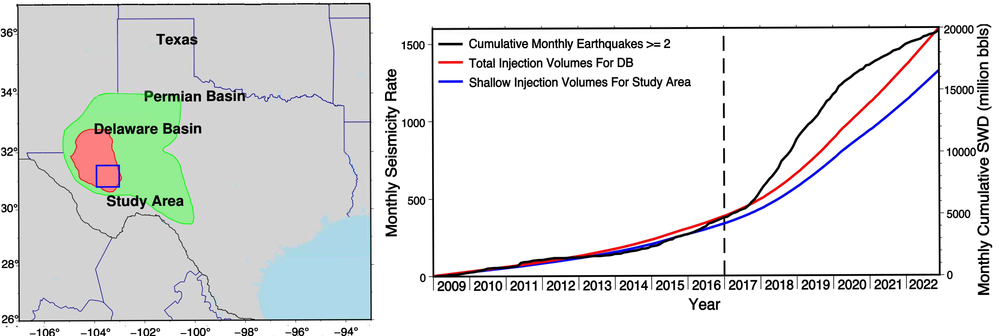
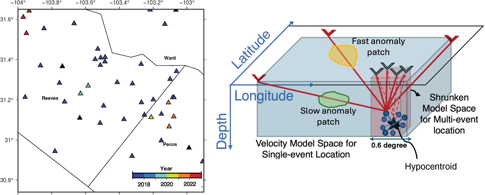
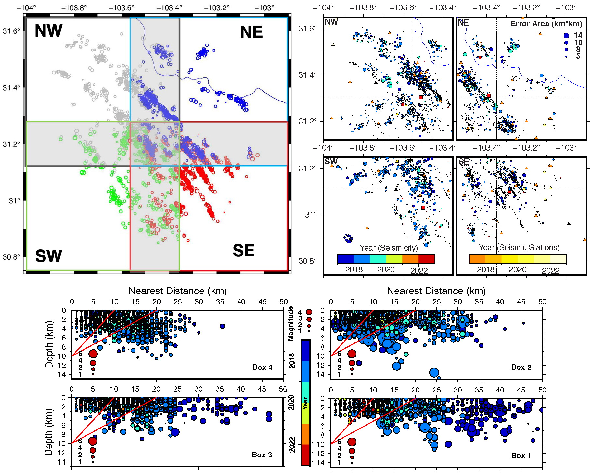
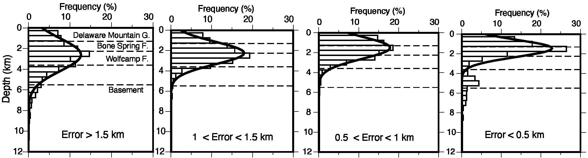
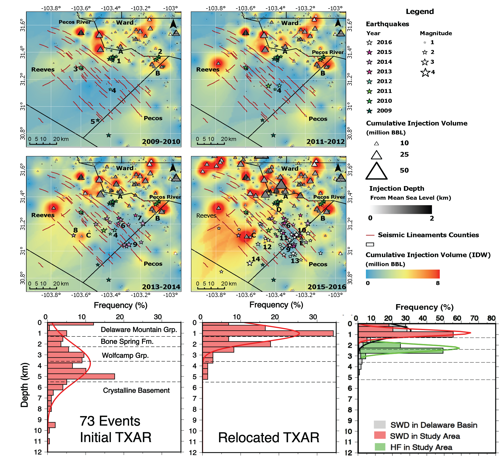
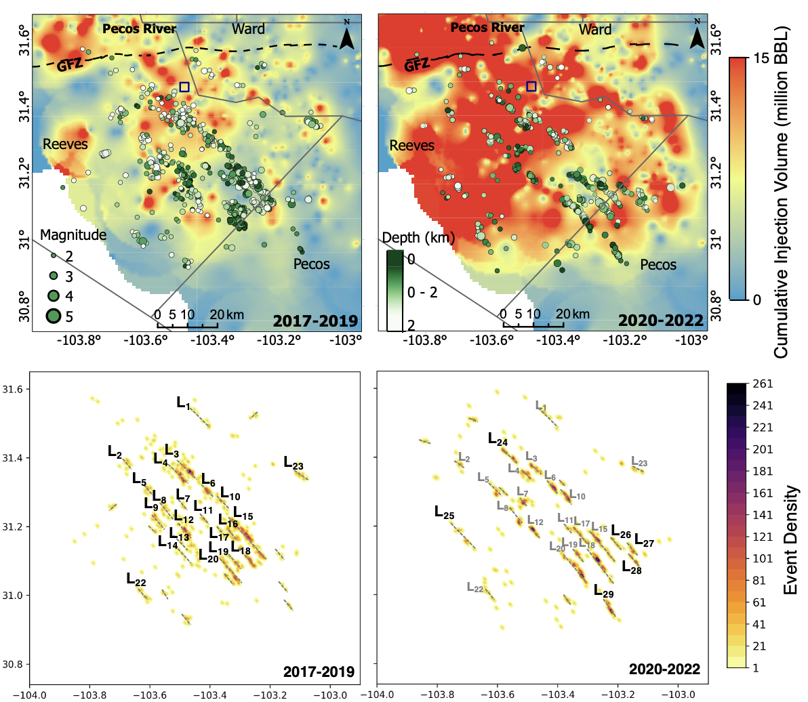

An earthquake appeared in 2009. Then another. Then thousands.
The Delaware Basin in west Texas had been quietly producing oil for decades when, around 2009, something changed. The first small tremors appeared near Pecos, barely felt, magnitude 1 or 2. But their timing was hard to ignore: they coincided with the beginning of large-scale saltwater disposal (SWD), the practice of re-injecting the wastewater produced alongside oil deep into permeable rock formations.
By 2017, when the Texas Seismological Network (TexNet) came online to monitor induced events, as the increasing number of felt earthquakes had grown more alarming. Between 2017 and 2022, shallow saltwater disposal volumes in the study area nearly quadrupled. A fivefold surge in injection coincided with at least a sixfold increase in seismicity rate. The earthquake count followed the barrels.

The increase in wastewater injection volumes coincided with a rise in earthquake activity in the southern Delaware Basin (Aziz Zanjani et al., 2025).
What began as an unexpected events became a scientific question of real consequence: which faults are reactivating, at exactly what depth, and are they moving seismically, aseismically, or both? The answers matter for hazard assessment, for regulatory decisions, and for understanding how the crust responds when humans alter its stress field at scale.
You cannot mitigate what you cannot locate, and locating small and shallow induced events is hard
The central difficulty in studying induced seismicity in the Delaware Basin is not seismicity itself. It is depth. Whether an earthquake happened at 1 km depth or 4 km is not merely academic: it determines which geological unit failed, which fault system reactivated, and whether the trigger is shallow wastewater disposal or something deeper and harder to regulate.
Two layers sit at the heart of the story. The Delaware Mountain Group (DMG) and the underlying Bone Spring Formation (BSF) are the target shallow units for saltwater disposal, porous sandstones at roughly 0–2 km below mean sea level. The Wolfcamp Formation, the main oil production target, sits deeper at >2.5 km. All SWD wells in the southern basin inject into the shallow units only. Knowing which layer is seismically active distinguishes an injection-triggered event from a production-triggered one.
A shallow high-velocity Ochoan salt layer, sitting just 200–700 m above the DMG, creates a velocity discontinuity that standard 1-D seismic models handle poorly. Earthquakes can appear deeper than they truly are or shift laterally in the catalog, simply because the velocity model is too simple so the errors add up along station-to-event paths of 10-km or longer.
— A well-known challenge in the basin, motivating the calibrated relocation approach used in both studiesBefore 2017, the only catalog available came from the TXAR array, regional stations 75–450 km away from the epicenters, recording predominantly P-waves. These gave useful directions and rough distances but yielded depth estimates with uncertainties commonly exceeding 5 km. Many events were assigned a default depth of zero. The pre-2017 seismic history of the southern Delaware Basin was, in a real sense, unmapped.
After 2017, TexNet improved matters substantially, but not completely. In the early years, the network had sparse coverage in parts of the study area, and many events lacked a seismic station within the critical 10 km radius needed to resolve shallow hypocentral depths. The network geometry evolved year by year. The quality of locations is therefore a function of time as much as of the algorithm, and understanding that time-dependent uncertainty is itself one of the findings of this research.
A virtual anchor in space and time: Hypocentroidal Decomposition
The relocation strategy in both the pre-2017 and 2017–2022 analyses is the Hypocentroidal Decomposition (HD) algorithm, implemented through the open-source MLOC software (Bergman et al., 2023). Rather than locating each earthquake independently against an imperfect velocity model, all events are located relative to a virtual reference point, the Hypocentroid (HYP), whose absolute position is pinned first using only the best-constrained, closest data.

The evolving TexNet network in southern Delaware Basin with stations color-coded by the year they were deployed. The schematic of Hypocentroidal Decomposition Algorithm. Single-event location: station-to-event ray paths (red) traverse a large velocity model volume (blue), accumulating model errors. The HYP is the anchor virtual location. HD multiple-event relocation: a core cluster of well-recorded events defines the HYP within a drastically shrunken model space (red), minimizing velocity-model bias (Aziz Zanjani et al., 2024).
In practice, this works through two nested inversions. A carefully chosen core cluster, for the TexNet study, 150 post-2020 earthquakes with strong azimuthal coverage and at least one station within 10 km, pins the HYP with sub-kilometer precision. Every other event then relocates relative to it via differential travel times, sidestepping the need for each individual earthquake to resolve the full Earth structure independently.
A further refinement addresses depth specifically. The S−P phase time difference, the gap between shear and compressional wave arrivals at a nearby station, is a powerful depth constraint. In the 2017–2022 study, 5,147 S−P differential times were added for stations within 10 km, substantially tightening depth estimates for shallow events. For the pre-2017 TXAR work, 290 S−P times from the core cluster and cross-correlation differential times at the co-located TX31 station performed the same function, anchoring events recorded by distant arrays to the locally-calibrated reference.
Why S–P Times Are Non-Negotiable for Depth
For a shallow earthquake (<2 km depth), the S−P time at a nearby station (<10 km) changes rapidly with depth, a 500 m error in depth corresponds to a measurable change in the differential arrival time. At distant stations (>50 km), this depth sensitivity disappears entirely; the S−P time is dominated by the horizontal travel path, not the source depth. This is why the rule of thumb, nearest station within 1–2 times the source depth, is not a guideline. It is a geometric necessity. Violating it guarantees systematically biased depths, and this is precisely what plagued the original TXAR catalog.
The HD algorithm also iteratively computes Empirical Reading Errors (EREs) for each station–phase pair, quantifying residual scatter and flagging outliers. By the end of calibration, every station–phase pair converges to a normal residual distribution, not just a best-fit location, but a rigorously characterized one. The resulting catalog carries honest, quantified uncertainties built into the method itself.
For the pre-2017 study, the same HD framework bridges a seven-year gap in network architecture. The post-2020 TexNet core cluster serves as the absolute anchor; TXAR events are connected to it via shared regional stations. This joint inversion links pre- and post-2017 seismicity into a single spatial reference frame, making direct comparison of hypocenter distributions across the two eras meaningful for the first time.
The error bars are not a footnote, they are part of the finding
Most seismicity studies treat location uncertainties as a necessary evil: reported in supplementary tables, minimized in prose. This work takes a different stance. The spatial and temporal patterns of uncertainty are themselves informative. They encode the history of a seismic network installed progressively, with dramatically different coverage in 2017 compared to 2022, and they warn against over-interpreting the early catalog.

Temporal changes in relative errors with evolving network (the absolute error is the sum of the relative error and the error from HYP), the effect of azimuthal coverage, the larger depth variations. Depth error plots are against nearest station distance. Red solid lines define 1-2 times rule of thumb, for depth value to be constrained, the station should be 1-2 times within hypocenter. All deeper events are pre-2020 earthquakes with larger depth errors (Aziz Zanjani et al., 2025).

Post-2020 earthquakes have shallower and tighter depth distribution and have best-resolved depth (Fig. 3) (Aziz Zanjani et al., 2025).
Three systematic patterns emerge. First, pre-2020 events carry larger errors than post-2020 events, not because they were smaller or harder to detect, but because the network was sparser. Second, pre-2020 events also appear systematically deeper in the original catalogs. This is a red flag: the apparent deepening corresponds precisely to the situation where the nearest station is too far away for robust depth resolution. Third, azimuthal gap correlates tightly with epicentral error area, events at the outskirts of the study area, where station coverage is thinnest, carry the largest uncertainties.
The HD approach produces systematically shallower solutions aligning more closely with the known injection depths. The difference between 1 km and 2 km is the difference between the DMG and the top of the Bone Spring Formation, a geologically meaningful distinction for identifying the triggering unit.
Pressure traveling southeast: a decade of fault reactivation mapped
With calibrated locations in hand, the spatial and temporal story of seismicity in the southern Delaware Basin comes into focus. It is not a static picture of faults uniformly responding to injection. It is a dynamic, evolving system in which pressure diffuses, faults reactivate and then quiet down, and new fault segments emerge as the injection footprint expands.
The pre-2017 chapter: the same faults, earlier
The TXAR relocation work establishes that the same northwest-trending shallow normal faults active in the post-2017 catalog were already reactivating as far back as 2009. Almost all 73 relocated pre-2017 events sit on the same fault lineaments identified from post-2017 seismicity, with one exception (cluster 1 in the 2009–2010 panel), the spatial overlap is striking. The faults being triggered today are the same ones that first moved more than a decade ago.

Maps of the 73 relocated TXAR events (stars, colored by year) against smoothed cumulative injection volumes (background) in two-year increments, overlaid on active seismic lineaments from post-2017 seismicity (red lines). In 2009–2010, clusters 1–3 occur 5–20 km from the earliest injection hotspots. By 2015–2016, seismicity has migrated southeast along expansion of injection. Initial depth histograms: TXAR events are centered at 0 km (default assignment) and widely scattered; TexNet events are more focused. After HD relocation: both catalogs shift to ~1 km below MSL, aligned with the SWD injection depth in panel. After relocation, the depth distribution matches shallow injection depth distribution in the study area (Aziz Zanjani et al., 2024).
TXAR Catalog — Before Relocation
Mean depth heavily biased. Epicentral uncertainties 10–15 km. The catalog is barely interpretable for spatial or depth analysis.
After HD Relocation
When tied to post-2020 seismicity, mean depth shifts to 1 km below MSL, matching the known SWD injection interval. 88% shallower than 2 km. Error areas 3–6× smaller. The same faults visible in post-2017 seismicity are now visible going back to 2009.
This matters enormously for physical interpretation. If one takes the full pre-2017 catalog at face value, the data seem to show earthquakes spanning a wide depth range, potentially implicating deep basement faults or the Wolfcamp production interval. The calibrated analysis shows that this broad distribution collapses: the majority of well-resolved seismicity sits squarely within the shallow SWD depth interval. The deep events largely disappear when uncertainty is accounted for properly.
The northwest trend and the southeast migration
The clearest structural signal in both catalogs is the prevalence of northwest-trending seismic lineaments: linear strings of earthquakes mapping directly onto shallow normal faults in the DMG. These faults are optimally oriented for reactivation by the regional stress field, in which maximum horizontal compression points northwest. At 71% of fault length, a pore pressure increase of just 2.5 MPa is enough to push them toward failure, and SWD-driven pressure changes in this range are documented across the basin.
But the pattern is not stationary. In 2009–2010, seismicity clusters in the north, 5–20 km from the earliest high-volume injection wells (A and B). By 2013–2016, the locus has shifted: new clusters (8–14) emerge near injection locations C, D, and E to the southeast. Then, from 2017 onward, the same migration accelerates: northern fault systems quiet down as southeastern ones activate and lengthen.
The southeast shift in the loci of seismicity spatially correlates with porosity and permeability changes in the subsurface, indicating heightened fluid capacity and effective pressure diffusion along highly porous and permeable sandstone within the Delaware Mountain Group. Pressure does not diffuse uniformly. It follows the geology.
— Aziz Zanjani et al. (2024), The Seismic RecordThis directional preference has a geological explanation. Smye et al. (2021) document that the DMG sandstone thickens toward the southeast, coinciding with pre-existing strata-bound fault trends and fracture corridors that act as anisotropic conduits for pressure migration. Sensitivity analyses (Ge et al., 2022) show that pressure build-up in these units is sensitive to horizontal permeability and compressibility, the system is structured to move pressure southeast. The seismicity simply follows.
The 2017–2022 chapter: a denser, more complete picture
With 5,453 relocated earthquakes over six years, the TexNet catalog provides far higher spatial resolution. The study area was divided into four overlapping quadrants (NW, NE, SW, SE), each with its own independently-constrained HYP. By 2020–2022, after TexNet had expanded substantially, over 95% of events locate shallower than 2 km below MSL with depth errors less than 1 km. The mean seismogenic depth of 1.5 km below MSL is consistent across both the pre-2017 and post-2017 catalogs, confirming that the same shallow fault system has been continuously reactivating for over a decade.

Left panels: 2017–2019, showing injection hotspots (background color, Kriging-interpolated SWD volumes) and earthquake locations (circles, depth-coded) with interpreted seismic lineaments (L1–L23, dashed green). Before 2020, most active lineaments occur in or near low-volume injection zones, suggesting far-field stress transfer is already operative. Right panels: 2020–2022. Seismicity reorganizes southeastward, new lineaments L24–L29 emerge adjacent to expanding SWD hotspots. The kernel density maps (lower panels) make the spatial shift unmistakable: the northwest is dimming; the southeast is brightening (Aziz Zanjani et al., 2025).
A notable feature of the post-2020 catalog is fault-to-fault stress interaction. Newer seismic lineaments (L26–L29) develop preferentially adjacent to the longest previously-active faults (L15, L20) rather than at random locations within the injection field. This reflects a cascade of stress redistribution: primary rupture transfers stress to neighboring fault segments, triggering slip that may extend well beyond the zone of direct pore pressure perturbation.
Creeping faults: when subsidence overprints expected uplift and seismicity tells only part of the story
InSAR satellite radar provides a complementary view. Sentinel-1 persistent scatterer data (StaMPS processing) shows the southern Delaware Basin subsiding at 3–4 cm per year over 2016–2022. But the deformation is not a simple bowl, it is a superposition of at least three distinct signals with different spatial character and different causes.
Long-wavelength (10–50 km) radially symmetric subsidence reflects volumetric depletion during hydrocarbon production. These signals are largely aseismic where they do not coincide with injection hotspots, production compacts the reservoir, the surface sinks, but faults are not pushed to failure.
Short-wavelength (3–5 km) linear subsidence tells a different story. These narrow, elongated lobes align precisely with the seismic lineaments: reactivated normal faults in the DMG. The spatial spacing of subsidence features (less than 5 km) mirrors the spacing of the seismic lineaments themselves. This is concurrent seismic and aseismic slip on the same fault surfaces. And critically, the total deformation amplitude requires a substantial aseismic component. Pepin et al. (2022) estimate that only 2% of the deformation caused by shallow SWD is seismic. Our regional data confirm this at scale: aseismic slip is the dominant mode; seismic slip is the visible signal.

Blue = subsidence; red = uplift. Solid green lines are seismic lineaments interpreted from relocated seismicity (l1–l15). The correspondence between narrow linear subsidence signals and seismic lineaments directly documents concurrent seismic and aseismic slip on reactivated normal faults in the DMG and BSF. Cross-sections A–A′ through D–D′ compare deformation profiles at 3 years (2016–2018) and 7 years (2016–2022), revealing temporal acceleration at several sites (S6, S7, S9, S10, S14) beginning around 2019. Broad, radially symmetric subsidence in the northwest (S4–S7) reflects production-related compaction without fault reactivation. Uplifted regions (U3–U9, shrinking after 2020) sit in areas of minimal injection and no seismicity (Aziz Zanjani et al., 2025).
What Uplift Tells Us
Several regions show net uplift rather than subsidence, areas with little or no injection and no seismicity, sitting between the subsidence zones. The interpretation: in these locations, SWD-driven pore pressure increase slightly exceeds production-related compaction. The crust is being pushed up. This spatial mosaic of uplift, subsidence, and fault slip between, reflects the inhomogeneous and time-variant stress regime created when injection and production operate concurrently across a geologically complex basin. It is also what makes seismic hazard assessment here genuinely difficult: the stress state is not static, it is evolving, and different parts of the fault network are at different stages of that evolution at any given moment.
What this means for monitoring, mitigation, and understanding
Several results from this work carry implications beyond the Delaware Basin. First: depth matters, and it is hard to get right. The systematic overestimation of hypocentral depths in early TexNet and pre-2017 TXAR catalogs has real consequences for physical interpretation and for regulation. Policies and models built on uncorrected catalogs could misidentify the faulting intervals being reactivated. The relocation work here provides a corrected foundation, but also a methodological warning: relocated catalogs anchored only to differential times without an absolute reference can inherit and propagate the biases of the initial catalog.
Second, aseismic slip is not a background process, it is pervasive, dominant, and linked to the same fault zones that occasionally produce felt earthquakes. This has direct regulatory implications: an operator watching injection-induced seismicity rates may be seeing only the 2% of fault deformation that is seismic. The 98% that is aseismic, equally relevant to ground stability, wellbore integrity, and long-term fault evolution, requires geodetic monitoring (InSAR, GPS) to detect at all.
Third, the southeastward migration of seismicity tracks fault permeability and stratigraphic connectivity as much as it tracks injection well locations. Models that route pressure isotropically from injection wells will miss the preferential southeast pathways documented here. Effective mitigation in this basin requires understanding not just where the wells are, but where the permeable sandstone thickens and where the fault corridors align.
Finally, this work establishes that the southern Delaware Basin has been responding to saltwater disposal continuously since at least 2009, well before TexNet was deployed, and well before the current scale of operations was reached. The faults reactivating today are the same ones that first moved fifteen years ago. Understanding the long-term stress accumulation on these structures, and what happens as injection volumes eventually decline or are redistributed geographically, is the open question that this decade of relocated earthquakes is now in a position to help answer.
With lessons learned in southern Delaware, I am now focusing on induced seismicity in northern Delaware Basin (southeast NM). Incorporating machine learning, I am trying to build more complete catalogs that can inform regulatory decisions in NM.